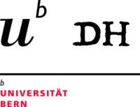
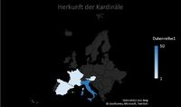

Static archive of a former Omeka site (snapshot 2026-11-24). Search and interactive features are not available.
Skip to main content
Data literacy 2021
Willkommen
Demographie des Kardinalskollegiums 1644
Herkunft
Sozialer Stand
Bildung
Kardinalate
Turmbücher
Soziale Probleme und Verbrechen
Personen und Namensgebung
Visualisierung
Straftaten: Fallbeispiele
Impressum
Restitutionsdebatte Schweiz
Becoming Benin Initiative Schweiz
Museen
Historisches Völkerkundemuseum St. Gallen
Museum Rietberg Zürich
Dokumentation
[Missing Page]
Sammlungen
von 1
1–3 von 3
Erweiterte Suche

test test
test

Kardinäle
von 1
1–3 von 3